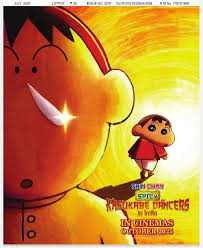
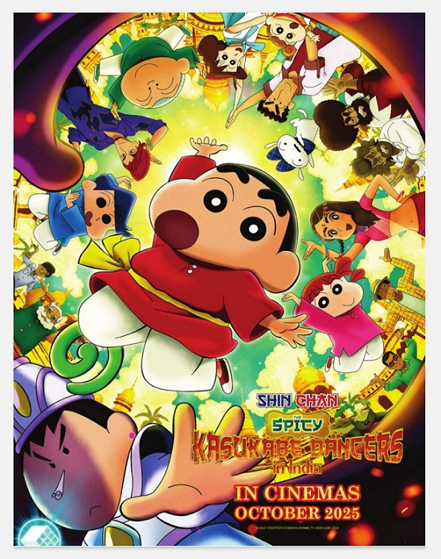
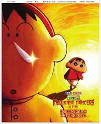
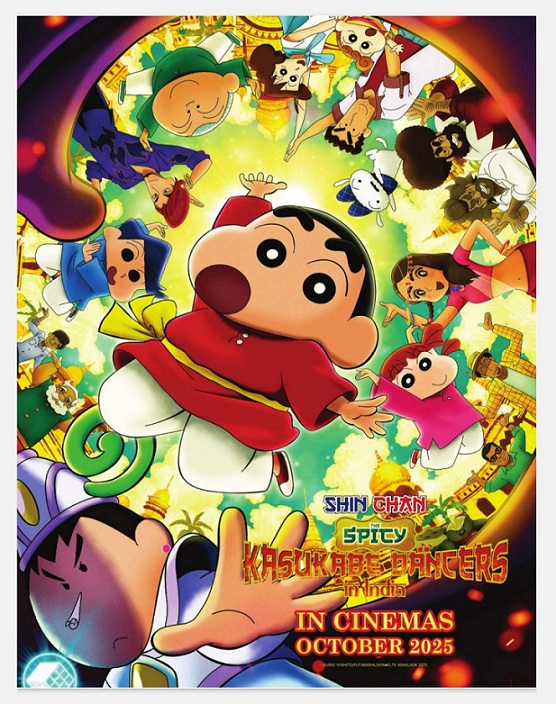

Welcome to shinchan world
Scroll down to see more content
Comic & Movie Showcase
.jpeg) 



About This World
Ever wonder what happens when a five-year-old with zero filter is let loose on the world? Welcome to Kasukabe, a seemingly normal town that serves as the playground for the chaotic adventures of Shinnosuke "Shin" Nohara. This isn't just a place—it's an epicenter of fun where every day is an unpredictable, laugh-out-loud journey.
More Information
Dive deeper and you'll find a world packed with unforgettable characters and hilarious situations. The Unbreakable Nohara Family: Meet Hiroshi, the everyman dad, Misae, the powerhouse mom, and baby Himawari. They’re the loving, chaotic heart of every story. The Kasukabe Defense Force: Join Shin-chan and his loyal crew of friends—Kazama, Nene, Masao, and Bo-chan—as they take on the epic challenges of the playground and beyond. Humor for Everyone: From goofy slapstick to sharp satire about modern life, the comedy is layered, clever, and guaranteed to make you smile.
The End
An episode might end, a chapter might close, but in Shin-chan's world, the fun is endless. This isn't the end of the story; it's the beginning of your next big laugh. The only thing left to do is jump in and join the chaos. Your adventure in Kasukabe is waiting!